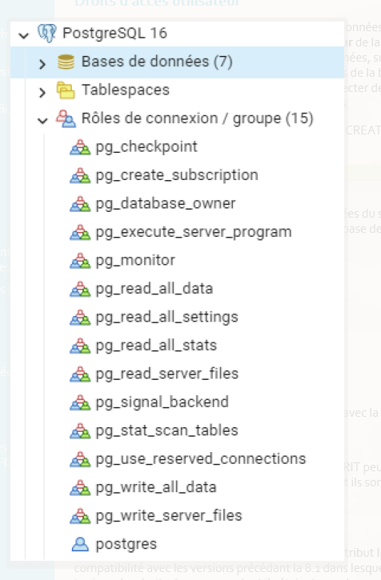

Administrer son serveur de bases de données
Objectifs de la séquence
L’objectif est d’assurer :
- la pérennité des données
- la cohérence des données
- la sécurité et la performance du serveur de bases de données
Concept général de l'administration
L’administration d’un système de bases de données nécessite de distinguer :
- la gestion du serveur
- la gestion des bases de données
Elle implique plusieurs aspects :
- les métiers autour des bases de données
- le système d’exploitation du serveur
- la gestion d’une base de développement et d’une base de production
Étapes de création d’un système de base de données
- Établir les caractéristiques de la base
- Évaluer le matériel serveur
- Installer PostgreSQL / PostGIS
- Créer et ouvrir la base de données
- Mettre en place la sauvegarde
- Créer et gérer les utilisateurs et leurs droits
- Implémenter la structure de la base
- Sauvegarder la base fonctionnelle
- Optimiser les performances
Architecture et arborescence PostgreSQL
Une installation PostgreSQL contient plusieurs éléments :
- data → stockage des données
- configuration → fichiers de configuration
- binaires → programmes exécutables
Focus sur les tablespaces
Les tablespaces permettent de définir un emplacement physique sur le disque pour stocker les données.
Ils permettent :
- d’organiser le stockage
- d’améliorer les performances
- de répartir les données sur plusieurs disques
Le rôle du DBA (Database Administrator)
Le DBA est responsable de :
- la gestion des droits utilisateurs
- la gestion des tablespaces
- la gestion de l’espace disque
- l’identification des tables critiques
- la gestion des sauvegardes
- la performance et la disponibilité de la base
Manipulations courantes
L’administration PostgreSQL comprend notamment :
- optimisation du serveur avec PGTune
- gestion des tablespaces
- création de bases de données
- création de bases template
- création d’utilisateurs
- création de tables
- création d’index
- affectation des objets aux tablespaces
Concept d'administration : différence entre SG et DB
Composants d’une base de données (DB)
Une base de données contient :
- les modèles de données (MCD, MLD, MPD)
- les schémas
- les tables et données
- les applications clientes
- les utilisateurs (roles)
- les requêtes SQL
- les index
Composants du système de gestion (SG)
Le système de gestion comprend :
- l’architecture du serveur
- le réseau
- le CPU
- la RAM
- le stockage
- le système d’exploitation
Les métiers autour de la base de données
Selon la taille de l’entreprise, plusieurs rôles existent :
- Administrateur système (SI)
- Administrateur de base de données (DBA)
- Développeur d’application
- Utilisateur
Système d'exploitation du serveur
PostgreSQL peut être installé sur :
- Linux
- Windows
Téléchargement :
https://www.postgresql.org/download/
Linux (Debian / Ubuntu) :
https://www.postgresql.org/download/linux/ubuntu/
Windows :
https://www.postgresql.org/download/windows/
Base de développement et base de production
Base de développement (DEV)
Le serveur de développement permet :
- de tester les fonctionnalités
- de corriger les erreurs
- d’expérimenter sans risque
Caractéristiques :
- données simplifiées
- environnement isolé
- travail collaboratif
Base de production (PROD)
La base de production est l’environnement réel utilisé par les utilisateurs.
Avant la production, on utilise souvent un serveur :
préproduction (staging)
Il permet de :
- tester dans un environnement réel
- détecter les bugs
- valider les mises à jour
Étapes détaillées de création d’une base
1. Établir les caractéristiques
Déterminer les objectifs de la base.
Exemple pour un géomaticien :
- stockage de données spatiales
2. Évaluation du matériel serveur
Cela dépend :
- du volume de données
- du nombre d’utilisateurs
- du type de données
Exemple :
- images satellites
- couches vectorielles
3. Installation PostgreSQL
Selon le système :
- installation via packages
- compilation des sources
Clients possibles :
- psql
- pgAdmin
- DBeaver
- QGIS
- applications web
4. Création de la base
PostgreSQL utilise un cluster.
Un cluster est l’ensemble des bases stockées dans un dossier.
Exemple :
/var/lib/postgresql/16/main
Les tablespaces permettent ensuite d’organiser le stockage.
5. Stratégie de sauvegarde
Deux types :
Sauvegarde manuelle
avec :
pg_dump
Sauvegarde automatisée
avec des scripts.
WAL (Write Ahead Log)
Les transactions sont enregistrées dans les WAL.
Ils contiennent :
- l’historique des opérations
- les modifications des données
Ils garantissent :
- la cohérence
- la récupération après crash
6. Gestion des utilisateurs
Création d’utilisateurs :
CREATE ROLE
CREATE USER
Le nombre maximal de connexions est défini dans :
postgresql.conf
7. Implémentation de la base
Cela comprend :
- modification de la structure
- ajout de données
- suppression de données
Ces opérations doivent être testées avant la mise en production.
8. Sauvegarde automatique
Une base en production doit être sauvegardée automatiquement.
Exemples :
https://github.com/DiouxX/script_backup_postgresql
http://nils.hamerlinck.fr/blog/2015/05/04/backup-automatique-base-postgresql/
9. Optimisation des performances
Optimisation PostgreSQL :
- mémoire
- index
- parallélisme
- tablespaces
Outil :
PGTune
https://pgtune.leopard.in.ua/
Fichiers importants PostgreSQL
OID
Chaque objet PostgreSQL possède un identifiant OID.
Les données sont stockées dans :
C:\Program Files\PostgreSQL\17\data\base
pg_hba.conf
Ce fichier gère :
- l’authentification
- les connexions utilisateurs
- les machines autorisées
Exemple :
192.168.1.10/32
postgresql.conf
Fichier principal de configuration.
Il permet de configurer :
- les performances
- la mémoire
- les connexions
- la sécurité du serveur
binaire c serveur interne
Les principaux binaires de PostgreSQL
pg_ctl (réalisé par les installateurs comme systemD ou celui de windows)
gestion de l'instance / cluster
start / stop / kill
init : création autre espace de datas
promote : promotion de standby
psql
le premier client de connexion en mode CLI
on se connecte avec un utilisateur à une base de donnée
on peux exécuter du SQL et des méta-commandes, ou des script sql (fichiers)
Exemple
pg_createcluster
création d'une instance PG
Création des répertoires (/etc et /var/lib)
Accompagné de pg_dropcluster (suppression de cluster), pg_lscluster (lister), pg_ctlcluster (contrôleur du cluster)
Les binaires pour la sauvegarde (PostgreSQL)
PostgreSQL fournit plusieurs outils binaires permettant de sauvegarder, restaurer et maintenir une base de données.
pg_dump
Outil utilisé pour sauvegarder une base de données.
Caractéristiques :
- sauvegarde d'une base spécifique
- plusieurs formats de sortie
- possibilité de sauvegarder table, schéma ou base complète
Formats possibles :
- plain text → script SQL lisible
- custom / binaire → format spécifique PostgreSQL
- compressé
Exemple : sauvegarder une base en SQL
pg_dump -U postgres -d ma_base > sauvegarde.sql
Exemple : sauvegarde en format compressé
pg_dump -U postgres -Fc ma_base > sauvegarde.dump
Exemple : sauvegarder une seule table
pg_dump -U postgres -t ma_table ma_base > table.sql
pg_dumpall
Outil permettant de sauvegarder l'ensemble du serveur PostgreSQL.
Il sauvegarde :
- toutes les bases
- les utilisateurs (roles)
- les permissions
Exemple
pg_dumpall -U postgres > sauvegarde_complete.sql
pg_restore
Permet de restaurer une base sauvegardée avec pg_dump (format custom ou binaire).
Exemple : restauration
pg_restore -U postgres -d ma_base sauvegarde.dump
Exemple avec création automatique de la base
pg_restore -U postgres -C -d postgres sauvegarde.dump
Wrappers (raccourcis PostgreSQL)
Ce sont des commandes simplifiées pour gérer les bases et utilisateurs.
createdb
Créer une base de données
createdb ma_base
dropdb
Supprimer une base
dropdb ma_base
createuser
Créer un utilisateur
createuser mon_user
dropuser
Supprimer un utilisateur
dropuser mon_user
Maintenance
PostgreSQL propose plusieurs outils de maintenance.
reindexdb
Permet de reconstruire les index pour améliorer les performances.
reindexdb ma_base
vacuumdb
Permet de nettoyer la base de données et libérer l’espace disque.
vacuumdb ma_base
Exemple complet :
vacuumdb -U postgres -d ma_base -f -z
Attention : outils système avancés
Ces commandes sont utilisées pour l'administration avancée du serveur.
pg_controldata
Permet de vérifier l'état du cluster PostgreSQL.
Il affiche :
- version PostgreSQL
- état du serveur
- informations WAL
Exemple :
pg_controldata /var/lib/postgresql/16/main
pg_resetwal
Permet de réinitialiser les journaux WAL en cas de crash.
⚠️ Attention : peut entraîner une perte de données.
Exemple :
pg_resetwal /var/lib/postgresql/16/main
pg_receive_wal
Permet de récupérer les WAL d'un serveur distant (réplication).
Exemple :
pg_receivewal -h serveur -U postgres -D /backup/wal
pg_basebackup
Permet de copier une base complète depuis un serveur PostgreSQL.
Utilisé pour :
- réplication
- sauvegarde complète
Exemple :
pg_basebackup -h serveur -U postgres -D /backup/base -Fp -Xs -P
Options :
- -Fp → format plain
- -Xs → inclure les WAL
- -P → afficher la progression
Administration PostgreSQL – Pratique
Cette fiche présente les principales manipulations réalisées pour administrer un serveur PostgreSQL / PostGIS : connexion au serveur, création de base, configuration, gestion des tablespaces et sauvegarde des données.
Les contrôles d'accès
Droits d'accès utilisateur
PostgreSQL™ gère les droits d'accès aux bases de données en utilisant le concept de rôles. Un rôle peut être vu soit comme un utilisateur de la base de données, soit comme un groupe d'utilisateurs de la base de données, suivant la façon dont le rôle est configuré. Les rôles peuvent posséder des objets de la base de données (par exemple des tables et des fonctions) et peuvent affecter des droits sur ces objets à d'autres rôles pour contrôler qui a accès à ces objets.
La création d'un utilisateur se fait par la commande CREATE ROLE ou avec l'interface de pgAdmin
CREATE ROLE nom_utilisateur LOGIN;
Les rôles sont communs à toutes les bases de données du serveur, autrement dit, les rôles sont définis au niveau du serveur et pas d'une base de données :

Les rôles de groupe
Un rôle peut être défini comme rôle de groupe.
Après l'avoir créé, on peut lui ajouter des membres avec la commande :
GRANT role_groupe TO role1,... ;
Les rôles membres qui ont l'attribut INHERIT peuvent utiliser automatiquement les droits des rôles dont ils sont membres, ceci incluant les droits hérités par ces rôles.
L'attribut NOINHERIT enlève l'héritage.
Par défaut, PostgreSQL™ donne à tous les rôles l'attribut INHERIT pour des raisons de compatibilité avec les versions précédant la 8.1 dans lesquelles les utilisateurs avaient toujours les droits des groupes dont ils étaient membres.
Un rôle de groupe n'a pas besoin d'avoir un droit de connexion à la base (LOGIN), ce sont les utilisateurs de ce groupe qui se connectent.
Attributs des rôles
droit de connexion
Seuls les rôles disposant de l'attribut LOGIN peuvent se connecter à une base de données.
statut de super-utilisateur
Les super-utilisateurs ne sont pas pris en compte dans les vérifications des droits, sauf le droit de connexion ou d'initier la réplication.
création de bases de données
Les droits de création de bases doivent être explicitement données à un rôle (à l'exception des super-utilisateurs qui passent au travers de toute vérification de droits).
création de rôle
Un rôle doit se voir explicitement donné le droit de créer plus de rôles (sauf pour les super-utilisateurs vu qu'ils ne sont pas pris en compte lors des vérifications de droits).
initier une réplication
Un rôle doit se voir explicitement donné le droit d'initier une réplication en flux (sauf pour les super-utilisateurs, puisqu'ils ne sont pas soumis aux vérifications de permissions). Un rôle utilisé pour la réplication en flux doit avoir le droit LOGIN.
mot de passe
Le client doit fournir un mot de passe quand il se connecte à la base.
Modification d'un rôle
Les attributs d'un rôle peuvent être modifiés après sa création avec ALTER ROLE.
Les privilèges (GRANT)
Un privilège est un droit sur un objet de la base attribué à un rôle.
Les SGBD permettent généralement de spécifier assez finement les privilèges d'un utilisateur en fonction des objets manipulés :
base de données
schéma
table (relation)
colonne (attribut)
Ainsi, un utilisateur peut se voir attribuer un privilège pour toute une base de données, le contenu d'un schéma, ou seulement pour quelques tables, ou encore sur uniquement quelques colonnes de certaines tables.
Règles d'attribution des privilèges
Règle n°0 : un mot de passe pour chacun
Tous les utilisateurs (clients, applications) doivent avoir un mot de passe.
Règle n°1 : attribution du moindre privilège.
Les utilisateurs ne doivent avoir que le minimum de droits, ceux strictement nécessaires à l'accomplissement de leurs tâches. Les privilèges peuvent évoluer au cours du temps car les besoins et les tâches affectées ne sont pas immuables, mais à un moment donné, seuls les droits indispensables doivent être fournis à un utilisateur.
Il faut éviter de créer plusieurs comptes avec des droits d'administrateur.
Règle n°2 : contrôle de la population.
Le personnel d'une entreprise bouge, il y a des départs, des arrivées, des promotions... Les privilèges doivent êtres synchrones avec la réalité de la population : il faut supprimer les comptes des utilisateurs quittant l'entreprise et de ceux n'étant plus affectés à telle ou telle tâche.
Règle n°3 : supervision de la délégation des tâches d'administration.
Un administrateur peut être amené à déléguer auprès d'une autre personne les tâches d'attribution des privilèges de tout ou partie de la population des utilisateurs (cf WITH GRANT OPTION). Un contrôle a posteriori doit être réalisé afin de vérifier que le résultat de cette délégation est conforme à la politique adoptée.
Règle n°4 : contrôle physique des connexions.
La connexion d'un utilisateur à une base de données peut être réalisée depuis n'importe où dans le monde grâce à Internet. Il est nécessaire de restreindre les connexions à des hôtes spécifiques connus (hba_conf).
Les principaux privilèges :
Les droits possibles sont :
SELECT
Autorise une sélection sur toutes les colonnes, ou sur les colonnes listées spécifiquement, de la table, vue ou séquence indiquée. Autorise aussi l'utilisation de COPY TO. De plus, ce droit est nécessaire pour référencer des valeurs de colonnes existantes avec UPDATE ou DELETE.
INSERT
Autorise une insertion d'une nouvelle ligne dans la table indiquée. Si des colonnes spécifiques sont listées, seules ces colonnes peuvent être affectées dans une commande INSERT, (les autres colonnes recevront par conséquent des valeurs par défaut). Autorise aussi COPY FROM.
UPDATE
Autorise une mise à jour sur toute colonne de la table spécifiée, ou sur les colonnes spécifiquement listées. (En fait, toute commande UPDATE nécessite aussi le droit SELECT car elle doit référencer les colonnes pour déterminer les lignes à mettre à jour et/ou calculer les nouvelles valeurs des colonnes.)
DELETE
Autorise la suppression d'une ligne sur la table indiquée. (En fait, toute commande DELETE nécessite aussi le droit SELECT car elle doit référencer les colonnes pour déterminer les lignes à supprimer.)
TRUNCATE
Autorise la suppression de tous les enregistrements de la table.
REFERENCES
Ce droit est requis sur les colonnes de référence et les colonnes qui référencent pour créer une contrainte de clé étrangère. Le droit peut être accordé pour toutes les colonnes, ou seulement des colonnes spécifiques.
TRIGGER
Autorise la création d'un déclencheur sur la table indiquée.
CREATE
Pour les bases de données, autorise la création de nouveaux schémas dans la base de données.
Pour les schémas, autorise la création de nouveaux objets dans le schéma. Pour renommer un objet existant, il est nécessaire d'en être le propriétaire et de posséder ce droit sur le schéma qui le contient.
Pour les tablespaces, autorise la création de tables, d'index et de fichiers temporaires dans le tablespace et autorise la création de bases de données utilisant ce tablespace par défaut. (Révoquer ce privilège ne modifie pas l'emplacement des objets existants.)
CONNECT
Autorise l'utilisateur à se connecter à la base indiquée. Ce droit est vérifié à la connexion (en plus de la vérification des restrictions imposées par pg_hba.conf).
TEMPORARY, TEMP
Autorise la création de tables temporaires lors de l'utilisation de la base de données spécifiée.
EXECUTE
Autorise l'utilisation de la fonction indiquée et l'utilisation de tout opérateur défini sur cette fonction. C'est le seul type de droit applicable aux fonctions. (Cette syntaxe fonctionne aussi pour les fonctions d'agrégat)
ALL PRIVILEGES
Octroie tous les droits disponibles en une seule opération. Le mot clé PRIVILEGES est optionnel sous PostgreSQL™ mais est requis dans le standard SQL.
La commande SQL GRANT permet de définir les droits : CTRL+C pour copier, CTRL+V pour coller
--syntaxe générale :
GRANT { { SELECT | INSERT | UPDATE | DELETE | TRUNCATE | REFERENCES | TRIGGER }
[, ...] | ALL [ PRIVILEGES ] }
ON { [ TABLE ] table_name [, ...]
| ALL TABLES IN SCHEMA schema_name [, ...] }
TO role_specification [, ...] [ WITH GRANT OPTION ]
GRANT { { SELECT | INSERT | UPDATE | REFERENCES } ( column_name [, ...] ) [, ...] | ALL [ PRIVILEGES ] ( column_name [, ...] ) } ON [ TABLE ] table_name [, ...] TO role_specification [, ...] [ WITH GRANT OPTION ]
Connexions distantes
Foreign Data Wrappers
Le FDW (Foreign Data Wrapper) natif de PostgreSQL postgres_fdw permet d'accéder aux tables à partir de serveurs PostgreSQL distants de manière très transparente.
Le FDW standard PostgreSQL permet également à la géométrie PostGIS de passer des hôtes distants aux hôtes locaux, ce qui est très pratique.
Données externes présentées comme des tables ;
En lecture/écriture (si supporté par le driver et à partir de PostgreSQL 9.3) :
PostgreSQL, Oracle, MySQL (lecture/écriture)
fichier CSV, fichier fixe (en lecture)
ODBC, JDBC, Multicorn
CouchDB, Redis (NoSQL)
--création d'un lien vers la base de données bd_test_postgis
CREATE SERVER foreign_bd
FOREIGN DATA WRAPPER postgres_fdw
OPTIONS (host 'localhost', port '5434', dbname 'bd_test_postgis');
--associer un utilisateur de la base de données distant à un utilisateur en local
CREATE USER MAPPING FOR postgres --utilisateur local
SERVER foreign_bd
OPTIONS (user 'postgres', password 'postgres'); --utilisateur distant
--création d'un table ayant la même structure que la table distante
CREATE FOREIGN TABLE foreign_parkings (
osm_id integer NOT NULL,
date_heure timestamp without time zone,
nom character varying ,
type_obj character varying,
xcoord double precision,
ycoord double precision,
geom geometry(Point,2154)
)
SERVER foreign_bd
OPTIONS (schema_name 'parkings', table_name 't_parking');
select * from foreign_parkings;
conseil
L'accès aux données des tables étrangères est plus lent et donc réservées à des accès intermittents (impossible de créer un index sur une table étrangère).
Il peut être pertinent d'encapsuler les tables distantes dans des vues matérialisées qui stockent les données en local.
Un FDW sur un WFS
Jouons avec les données de l'INPN => http://ws.carmencarto.fr/WFS/119/fxx_inpn
Extension
En pré-requis, il faut que l'extension soit ajoutée (ça tombe bien nous l'avions prévue dans notre template).
CREATE EXTENSION IF NOT EXISTS ogr_fdw;
Création du serveur
DROP SERVER IF EXISTS fdw_ogr_inpn_metropole;
CREATE SERVER fdw_ogr_inpn_metropole
FOREIGN DATA WRAPPER ogr_fdwOPTIONS (
datasource 'WFS:http://ws.carmencarto.fr/WFS/119/fxx_inpn?',
format 'WFS'
);
Création d'un schéma dédié
CREATE SCHEMA IF NOT EXISTS inpn_metropole;
Récupération de l'ensemble des couches WFS comme des tables dans le schéma inpn_metropole
IMPORT FOREIGN SCHEMA ogr_all
FROM SERVER fdw_ogr_inpn_metropoleINTO inpn_metropoleOPTIONS (
-- mettre le nom des tables en minuscule et sans caractères bizarres
launder_table_names 'true',
-- mettre le nom des champs en minuscule
launder_column_names 'true');